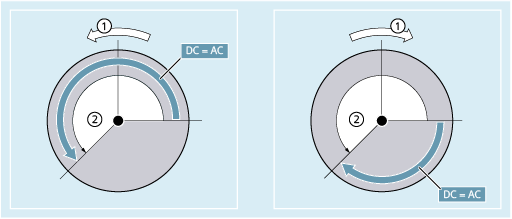

Positioning with SPOSA
The block step enable or program execution is not affected by SPOSA. Spindle positioning can be performed during execution of subsequent NC blocks. The program moves to the next block if all the functions (except for spindle) programmed in the current block have reached their end-of-block criterion. The spindle positioning operation may be programmed over several blocks (see WAITS).
| Note |
|
If a command, which implicitly causes a preprocessing stop, is read in a following block, execution of this block is delayed until all positioning spindles are stationary. |
Positioning with SPOS/M19
The block step enabling condition is met when all functions programmed in the block reach their end-of-block criterion (e.g. all auxiliary functions acknowledged by the PLC, all axes at their end point) and the spindle reaches the programmed position.
Velocity of the movements:
The velocity and the delay response for positioning are stored in the machine data. The configured values can be modified by programming or by synchronized actions, see:
Specification of spindle positions:
As the G90/G91 commands are not effective here, the corresponding dimensions apply explicitly, e.g. AC, IC, DC, ACN, ACP. If nothing is specified, traversing automatically takes place as for DC.
Synchronize spindle movements with WAITS
WAITS can be used to identify a point at which the NC program waits until one or more spindles programmed with SPOSA in a previous NC block reach their positions.
| Program code | Comment |
|---|---|
| N10 SPOSA[2]=180 SPOSA[3]=0 | |
| ... | |
| N40 WAITS(2,3) | ; The block waits until spindles 2 and 3 have reached the positions specified in block N10. |
WAITS can be used after M5 to wait until the spindle(s) has (have) stopped. WAITS can be used after M3/M4 to wait until the spindle(s) has (have) reached the specified speed/direction of rotation.
| Note |
If the spindle has not yet been synchronized with synchronization marks, the positive direction of rotation is taken from the machine data (state on delivery). |
Position spindle from rotation (M3/M4)
When M3 or M4 is active, the spindle comes to a standstill at the programmed value.
① | Direction of rotation |
② | Programmed angle |
There is no difference between DC and AC dimensioning. In both cases, rotation continues in the direction selected by M3/M4 until the absolute end position is reached. With ACN and ACP, deceleration takes place if necessary, and the appropriate approach direction is taken. With IC dimensioning, the spindle rotates additionally to the specified value starting at the current spindle position.
Position a spindle from standstill (M5)
The exact programmed distance is traversed from standstill (M5).